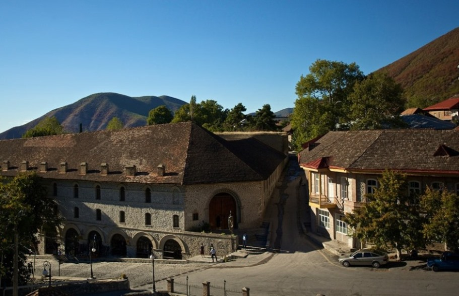
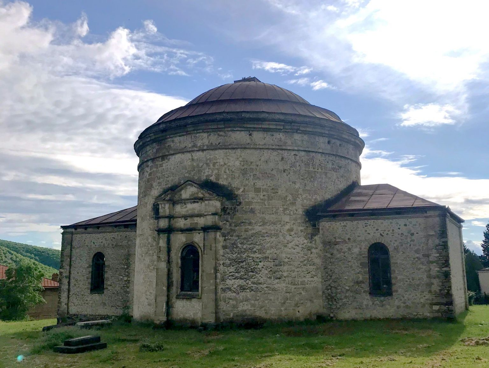
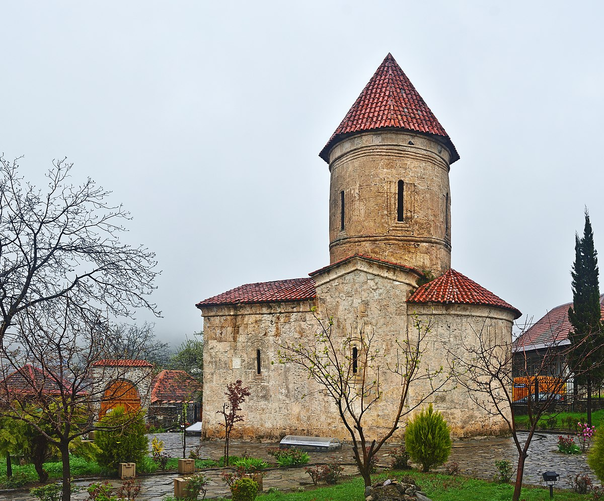

Çələbi xan restoranı
Çələbi Xan restoranı Bəxtiyar Vahabzadə adına olan yamyaşıl parkda yerləşir. Buraya hər növbəti gəlişinizdə mütləq Xan və Koroğlu kabablarını, Xan aşını, Nar qovurması, Dobu dolması, Girs, Maça, Dobu bozbaşı və Piti kimi yeməklərin dadına baxmağınızı tövsiyə edirəm. Qiymətlərə gəldikdə isə buranın qiymətləri Bakı restoranlarındakından daha ucuzdur. 6 böyük və 2 uşaq üçün verdiyim sifarişə 100-120 AZN civarında xərc çıxdı. Çələbi Xan restoranındakı yeməklər ilə restoranın saytında tanış ola bilərsiniz.
Restoranın saytına bura klikləyərək daxil ola bilərsinizŞəki xan sarayı

Şəkinin qürur mənbəyi, keçmişini bugününə bağlayan və UNESCO-nun Ümumdünya irsi siyahısına namizəd ən önəmli tarixi-əhəmiyyətli xəzinəsi – Şəki Xan Sarayı … 300 illik tarixi qoruyub saxlayan və bugünə qədər günümüzə gətirən bu saray 18-ci əsrdə sonuncu Şəki xanı Hüseyn Xan Müştaq tərəfindən inşa etdirilmişdir. 30 metr uzunluğunda iki mərtəbəli 300 m2 sahəyə, 6 otaq, 4 dəhliz və iki güzgülü eyvana sahib olan saray fars memarlıq üslubunda tikilmişdir və İslam Şərqinin memarlıq incilərindən hesab edilir.Tikildiyi zaman daha çox Divanxana, yəni şəhər məhkəməsi olaraq nəzərdə tutulsa da, bəzən Şəki xanı tərəfindən yay iqamətgahı kimi də istifadə edilirdi. Sarayın ən maraqlı xüsusiyyətlərindən biri fasadında və pəncərələrində “şəbəkə” adlanan taxta işləmələrin mismar istifadə edilmədən keçirmə üsulu ilə hazırlanmasıdır. Hal-hazırda saray muzey olaraq fəaliyyət göstərir və giriş biletinin qiyməti böyüklər üçün 2 AZN təşkil edir.
Dairəvi Məbəd və ya Nuxa Üçmüqəddəs Kilsəsi
Bu məbədlə bağlı fikirlər birmənalı olmasa da, 20-ci əsrdə buraya tədqiqata gəlmiş mütəxəssislər tərəfindən məbədin 19-cu əsrdə ruslar tərəfindən tikilməsi qənaətinə gəlinmişdir. Bəzi mütəxəssislər isə məbəd-kilsəni Qafqaz Albaniyası dövrünə aid edirlər.Burada diqqətimi çəkən digər bir xüsusiyyət isə məbədin bağçasında rastlaşdığım qəbirlər oldu. Sən demə bu qəbirlər Nuxada vəfat etmiş bir neçə yüksək çinli rus məmuruna məxsusdur. Hal-hazırda məbədinin içində Şəki Xalq Tətbiqi Sənət Muzeyi fəaliyyət göstərməkdədir. Şəki Xan sarayından qayıdandan sonra bura mütləq baş çəkməlisiniz.
Yuxarı Karvansaray

Şəkinin ən gözəl küçəsi olan Mirzə Fətəli Axundov küçəsində yerləşən Yuxarı Karvansaray, 18-19-cu əsrlərdə tikilmiş 5 böyük karvansaraydan bugünə qədər gəlib çatmış 2 karvansaraydan biridir. 3 mərtəbəli bu karvansarayın sahəsi 6000 m2, otaqlarının sayı isə 300-dən çoxdur. Karvansarayın 1-ci mərtəbəsi tacirlərin mallarını yığması, 2-ci mərtəbəsi ticarət etməsi, 3-cü mərtəbəsi isə yaşamaları üçün nəzərdə tutulmuşdu. Karvansarayda ən diqqətimi çəkən məqam isə buranın Mərakeşdəki ənənəvi “riad”lara (daxili hovuzu və həyəti olan evlər) bənzəməsi idi
Kiş Alban Məbədi
Şəkinin mərkəzindəki görməli yerlərdən sonra üz tutdum Kiş Alban məbədinə. Bəzi mənbələrdə Kiş kəndində yerləşən məbəd nəinki Qafqaz Albaniyasının, ümumiyyətlə bütün cənubi Qafqazın ilk kilsəsi olaraq qeyd edilir. Kilsəyə gedən yol kəndin dolanbaclı küçələrindən keçir və kəndin ən hündür nöqtələrindən birində yerləşir.Kilsə bugünə qədər yaxşı qorunub saxlanıb və 2000-2001-ci illərdə restavrasiya olunub. Elə həmin illərdə burada tədqiqat aparan Norveç alimlərinin gəldiyi qənaətə görə kilsə 10-11-ci əsrlərdə inşa edilmişdir. Kilsədə ən çox diqqətimi çəkən nüans kilsənin altının tamamən xristian qəbirləri ilə dolu olmasını öyrənmək oldu. Bu qəbirlərdən bəzilərini kilsə ətrafında qazılmış quyular vasitəsilə görmək də olur. Hal-hazırda bura muzey kimi fəaliyyət göstərir və giriş 2 AZN-dir.